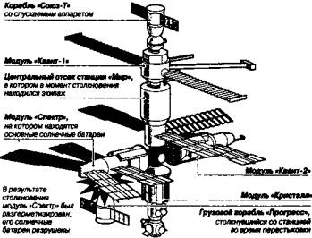

Эпопея «Мира»
Прежде чем рваться на Луну, в дальние космические просторы, неплохо было бы навести порядок на Земле и вокруг нее. В наши дни, когда происшествий на орбите уже не скрывают, стало понятно, что картина жизни в космосе далеко не столь радужна, как нам пытались показать еще недавно. Вспомним хотя бы некоторые фрагменты из истории орбитальной станции «Мир»…
ЗАСЛУЖЕННЫЕ АВАРИЙЩИКИ РОССИИ. Космонавты Василий Циблиев и Александр Лазуткин по количеству аварий перекрыли показатели всех команд, которые 25 лет работали по программе длительных пилотируемых полетов. Так было сказано на пресс-конференции, которую в конце июля 1997 года провел заместитель руководителя полетом, космонавт Сергей Крикалев. Он же напомнил основные этапы космической одиссеи.
Пожалуй, все началось с пожара. 23 февраля 1997 года на станции случилось первое чрезвычайное происшествие — возгорание с языками пламени длиной около метра и выбросами расплавленного металла. Впрочем, космонавты не растерялись и за 14 минут пожар потушили. Все шесть членов экипажа (основной и прилетевший на смену) не пострадали, хотя и наглотались дыма. Таким оказалось боевое крещение Циблиева и Лазуткина, и они его с честью выдержали. Чего, к сожалению, нельзя сказать о новичке, американце Джерри Линенджере — нашим ребятам по ходу дела пришлось приводить его в чувство.
«Ну, с кем не бывает на первых порах», — рассудили космонавты и пропустили мимо ушей довольно-таки странный доклад Линенджера своему начальству. В нем он описал, как мужественно лечил серьезные травмы и тяжелые ожоги космонавтов (хотя на самом деле экипаж отделался мелкими ссадинами). Всех больше интересовало другое: отчего пожар случился?
Выяснилось, что у шашки, которую зажгли, чтобы с помощью пиролиза пополнить запас кислорода на борту станции, вышел срок годности. Прибегнуть же к этому экстраординарному методу добычи кислорода пришлось потому, что на борту оказалось вдвое больше людей, чем запланировано, и штатное оборудование жизнеобеспечения со своими обязанностями уже не справлялось. Вслед за сбоем в системе обеспечения кислородом начались проблемы с терморегуляцией. В результате экипажу пришлось неделю «париться» при температуре 30 °C, вдыхая пары антифриза из подтекающей системы охлаждения.
Эту неисправность устранили лишь к середине июня. Когда Циблиев и Лазуткин расстались с Джерри Линенджером (у американского астронавта кончился срок командировки, и он отбыл на Землю), космонавты вздохнули с облегчением. Отношения между ними и американцем так и не сложились (почему — об этом речь ниже).
Вместо него на борт прибыл астронавт Майкл Фоэл, работать и жить бок о бок с которым оказалось намного легче.
Однако приключения на том вовсе не кончились…
25 июня 1997 года по команде с Земли командир экипажа Василий Циблиев отстыковал уже разгруженный и набитый мусором грузовой корабль «Прогресс М-34». Казалось бы, после перенесенных неприятностей ЦУПу не стоило бы еще усложнять жизнь экипажу. Однако вместо того, чтобы отпустить «грузовик» подобру-поздорову, экипажу было приказано потренироваться в выполнении операций расстыковки, а затем новой стыковки «Прогресса» на другой стыковочный узел. Операция выполнялась в так называемом телеоператорном режиме управления, при котором командир управляет грузовым кораблем, передвигающимся автономно от станции, по существу, вручную.
И тут Циблиев не рассчитал. Как показало последующее расследование, он не учел, что «Прогресс» перегружен мусором, а стало быть, имеет на полтонны большую инерционную массу, чем полагалось по расчетам. Махина плохо поддавалась управлению, с запозданием реагировала на команды. Сначала никак не могла разогнаться, а потом слишком медленно тормозилась. В результате вместо мягкого касания, в 13.25 произошло довольно-таки жесткое соударение грузового корабля с комплексом в районе научного модуля «Спектр».
Через 10 минут после столкновения во время очередного сеанса связи Циблиев доложил Земле:
«Торможения не было. Грузовик не мог увести, потому что он вроде нормально шел, а потом скорость начала увеличиваться непонятно почему. Значит, попал в модуль „О“. Горят (сигнализация. — С С.) „Батареи“ и „Разгерметизация станции“. Сейчас давление на станции 700 мм».
Владимир Соловьев из ЦУПА отреагировал немедленно:
«Понятно, черт возьми! Закрывайте люки!»
Так гласит стенограмма этого драматического момента.
Давление внутри станции удалось стабилизировать, перекрыв доступ в аварийный модуль. Однако при столкновении пострадали кабели и, возможно, сами солнечные панели «Спектра», дающие около 30 % электроэнергии.
Экстренно была создана экспертная комиссия под руководством гендиректора Российского космического агентства Юрия Коптева. Около 70 специалистов принялись искать выход из создавшегося положения. Было решено сориентировать «Мир» таким образом, чтобы на оставшиеся в рабочем состоянии панели фотоэлементов падало максимум солнечного света.
САМИ ЛОМАЕМ, САМИ ЧИНИМ?… На следующее утро, в 5.30 по московскому времени, экипаж проснулся от холода. Станция тонула в кромешной тьме. Оказалось, за ночь комплекс потерял оптимальную ориентацию, с трудом достигнутую накануне, разрядились аккумуляторы, перестала работать система стабилизации.
А все из-за того, что накануне в суматохе командир отсоединил кабель, соединяющий бортовую ЭВМ с датчиками положения. Компьютер перешел на аварийный режим работы, отключив свет, отопление, а также систему ориентации.
Злополучный кабель поутру присоединили, но на запуск системы ориентации энергии в аккумуляторах уже не осталось. Образовался как бы замкнутый круг: чтобы запустить гироскопы, стабилизирующие станцию, необходима энергия, а чтобы получить энергию, нужно развернуть станцию…
В конце концов выйти из положения удалось за счет двигателей пристыкованного к станции корабля «Союз ТМ-25», израсходовав часть топлива, предназначенного для возвращения экипажа на Землю… Так или иначе, но ушло еще двое суток, прежде чем комплекс вернули в то положение, которое он занимал сразу же после аварии. И на Земле, и в космосе вздохнули с облегчением. Можно было готовиться к ремонту станции. По тому, как падало давление, специалисты определили примерную площадь пробоины в корпусе — около 27 кв. мм. Истинные же ее размеры космонавты должны были выяснить при визуальном осмотре места столкновения.
Было предложено два варианта инспекции. Один из них предполагал вход в аварийный модуль изнутри, второй — инспекцию его снаружи. Ремонт было решено так же разделить на две стадии. Во-первых, космонавты должны были поставить на корпусе гермоплату — специальную «нашлепку», позволяющую восстановить соединение батарей «Спектра» (по крайней мере трех из них — четвертая, похоже, повреждена «Прогрессом») с энергосистемой комплекса. Во-вторых, космонавты должны были залатать пробоину.
С этой целью на 5 июля 1997 года запланировали запуск очередного «Прогресса М-35» с необходимым ремонтным оборудованием и снаряжением на борту. Он благополучно прибыл, но тут неожиданно запросил пощады «железный» Василий Циблиев — у командира забарахлило сердце. И медики запротестовали — никакого ремонта; на долю этого экипажа приключений было уже достаточно.
«МИР» ГЛАЗАМИ ИНОСТРАНЦЕВ. Так что, как видите, не только «Алмазы» с «Салютами», но и «Мир» не стал для космонавтов с астронавтами «землею обетованной». Не случайно, когда бывшего директора Института космических исследований, академика Роальда Сагдеева, ныне, как известно, живущего в США, спросили, что делают космонавты в космосе, он ответил: «В основном, выживают…»
Академик знал, что говорил, он не раз был свидетелем, а то и участником событий, которые далеко не всегда становились достоянием гласности. О многом ТАСС умалчивало. Но вот что пишет зарубежная пресса:
«Американские астронавты, работавшие бок о бок с российскими космонавтами, отмечают, что, конечно, опыт, самоотверженность, выучка их российских коллег заслуживают всяческого поощрения. Однако все сходятся на том, что их первое знакомство со станцией было на грани потрясения…»
«Стыковочный люк столь узок, что сквозь него с трудом можно протиснуться. После прилизанного интерьера американского „челнока“ орбитальный комплекс поражает астронавтов видом протянутых туда-сюда кабелей и проводов, похоже, соединенных на живую нитку.
Несмотря на постоянно работающую вентиляцию, в воздухе висит неистребимый, насквозь все пропитывающий запах пота, дезинфицирующих средств и прочего, что свидетельствовало о всевозможных незапланированных микроутечках».
Впрочем, надо отдать должное британскому журналисту, которому принадлежат вышеприведенные строки. Он нашел возможным также отметить, что «космонавты еще долго будут наставниками астронавтов». Однако наставничество это далеко не всегда протекает гладко.
Майкл Фоэл оказался одним из лучших иностранных напарников наших ребят. Лишившись своего уголка на «Мире» — в поврежденном «Спектре» было его спальное место, оставшись без оборудования, персонального компьютера, сменной одежды и даже зубной щетки, он стоически перенес выпавшие на его долю тяготы. Более того, он даже вызвался заменить заболевшего Василия Циблиева во время планировавшегося выхода в открытый космос и был искренне огорчен, когда этот выход отменили. «Где я еще получу такой ценный практический опыт?» — сокрушался он.
Прекрасные отношения были у наших космонавтов с американкой Шеннон Люсид и многими другими ее согражданами. А вот тот же Джерри Линенджер не стеснялся повернуться спиной, когда его просили помочь: «У меня своя программа…» Что, понятное дело, вызывало досаду и горечь. Впрочем, справедливости ради отметим, что, по идее, Линенджер должен был лететь с Александром Калери и Валерием Корзуном. И те в ходе совместных тренировок как-то притерпелись к странностям его характера. Однако в самый последний момент была произведена замена российских космонавтов, и результат не преминул сказаться…
ЛЮДИ, ОНИ ВСЮДУ — ЛЮДИ. У нас вообще сложилась довольно парадоксальная практика. За психологическую подготовку, совместимость членов экипажа до полета несет ответственность Министерство обороны, представители которого зачастую не стесняются заявлять: «Космонавты — взрослые люди. Им надо дело делать, приказы выполнять, а не заниматься коммунально-кухонными конфликтами…» А вот за обеспечение нормального психологического климата на борту отвечает уже Минздрав. И медикам приходилось уже несколько раз досрочно прерывать полеты. Не только потому, что здоровье кого-то из членов экипажа вдруг резко ухудшилась, а и потому, что, как уже упоминалось, взаимоотношения между космонавтами доходили до драки…
Психологически очень трудно находиться все время друг у друга на виду, пользоваться одними и теми же предметами туалета, загубниками, унитазом и т. д. Уже одно то, что для многих целей космонавтам приходится использовать воду, получаемую посредством очистки мочи, повергнет в шок неподготовленного человека. Но это, как выясняется, еще не самое страшное. Куда хуже, когда человек перестает понимать человека.
Международным экипажам в этом отношении еще сложнее, чем национальным. Тут, кроме всего прочего, взаимоотношения осложняются языковым барьером, различными традициями, даже чувством юмора. Даже опытный переводчик зачастую не в состоянии передать тому же американцу «соль» многих русских анекдотов. Аналогично очень многое теряется и при обратном переводе. Поэтому, например, Норману Тагарту было трудно «потрепаться» в свободную минуту с Владимиром Дежуровым и Геннадием Стрекаловым, и он очень по этому поводу переживал. Возможно, даже похудел из-за того. Хотя, впрочем, непривычный рацион питания тоже дал о себе знать…
Майклу Фоэлу жить на борту было легче. Он знает русский настолько хорошо, что понимает и многие языковые нюансы. Кроме того, в силу своего характера, даже лишившись своего уголка на борту, он не стал ныть, вошел, так сказать, в положение и даже, как упоминалось, изъявил готовность заменить заболевшего Циблиева в ходе подготовки к выходу в открытый космос. А это, между прочим, определенный риск — астронавту пришлось бы работать в непривычном для него российском скафандре.
ПОЧЕМУ ЗАТОПИЛИ «МИР»? Выход американца в открытый космос, как вы знаете, не состоялся. Не взяли с собой в полет Анатолий Соловьев и Павел Виноградов и француза Леопольда Эйарти. «У нас отсутствуют энергоресуры на проведение полномасштабной научной программы на „Мире“», — прояснил тогда ситуацию гендиректор Российского космического агентства Юрий Коптев.
Космонавты со своей задачей справились, «Мир» в очередной раз реанимировали. Ну а что дальше?
В конце прошлого столетия многие зарубежные спонсоры стали полагать, что станция свое уже отработала и дальнейшее пребывание на ней экипажа может стать попросту опасным. Американцы даже собирались вообще отказаться от дальнейших работ на «Мире» и подождать, пока не будет введена в строй станция «Альфа», более известная нам ныне под названием МКС.
«Пребывание астронавтов на борту „Мира“ обходится нам в полмиллиарда долларов в год, а бесконечные неполадки выбивают экипаж из рабочего ритма, не дают возможности выполнять программу научных экспериментов», — так мотивировали они свое решение.
Позиция представителей Европейского космического агентства, в частности, немцев и французов, была поначалу менее жесткой. «Неполадки дают хорошие уроки преодоления нештатных ситуаций», — творят они, подчеркивая, что россияне имеют уникальный опыт работы на орбите, ведь они осуществляют долговременные экспедиции около 15 лет. Но постепенно и они начали менять свое отношение к ситуации. «Станция превысила все мыслимые сроки эксплуатации, — рассуждали они. — Зачем подвергать людей неоправданному риску?»
У нас отношение к станции было двояким. Большинству населения России почему-то было жаль станцию. И они предлагали латать ее до бесконечности, справедливо полагая, что на новую станцию у нас денег не найдется.
Первыми, как ни странно, воспротивились этому технические специалисты, но после того, как на станции отказали однажды компьютеры и она на некоторое время оказалась в неуправляемом режиме, наши инженеры забили тревогу. «Пришло время затопить станцию, пока она еще управляется, — заявили они. — Иначе мы будем иметь большие неприятности…»
Неизвестно, как бы развивались события дальше и сколько бы продолжалась дискуссия, но тут в Париже некий предсказатель выпустил книгу, в которой предвещал, что станция вскоре непременно упадет, причем свалится прямо на головы парижан.
Книга имела шумный успех, и, возможно, именно она стала последним аргументом. Тут же нашлись деньги на дозаправку станции топливом, и 23 марта 2001 года российская космическая станция «Мир» прекратила свое существование. В 8 часов 45 минут по московскому времени она вошла в плотные слои атмосферы, где начала гореть и разламываться на куски. Обломки станции упали в северо-западной части расчетного района затопления станции, в южной части Тихого океана, сообщило ИТАР-ТАСС.
Впрочем, кое-кто и поныне считает, что с затоплением поторопились. И надо было бы прежде отстыковать от комплекса наиболее новые модули, подготовив таким образом основу для создания станции «Мир-2».

Схема столкновения станции «Мир» с грузовым кораблем «Прогресс».